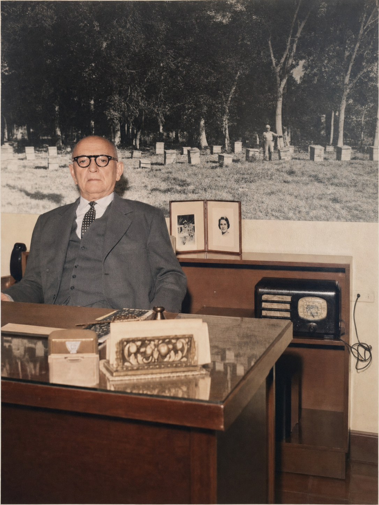

El primer registro
Leoncio Benito Rivas figura inscrito como comerciante y dueño de la bodega La Yaba.
Camagüey · Cuba · Siglo XX
Desde Camagüey, una firma dedicada a la miel y la cera construyó relaciones comerciales que hoy podemos seguir a través de sus documentos.
Leoncio Benito Rivas figura inscrito como comerciante y dueño de la bodega La Yaba.
Una carta comercial documenta los embarques de cera de abeja desde Cuba.
Un socio belga recuerda una colaboración comercial de unos cuarenta años.

Comercio e historia
Las cartas de 1934 y 1939 hablan de embarques de cera y de posibles compradores de miel en Nueva York.
Años después, una carta enviada desde Amberes recordó el vínculo comercial mantenido durante décadas con la firma.
Explorar la historiaIdentidad documentada
Las letras de cambio conservan la imagen comercial de la firma. El expediente de marca describe fondos blancos y sepia, un logotipo negro y el relieve gris de sus letras.
«Fondos de blanco y sepia, color logotipo negro con relieve de letras grises».
La marca fue registrada posteriormente por José Agustín Benito Menéndez, sobrino de Leoncio Benito.
Consultar el expediente M2938976 en la OEPM Ver la letra de cambio original